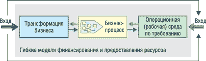
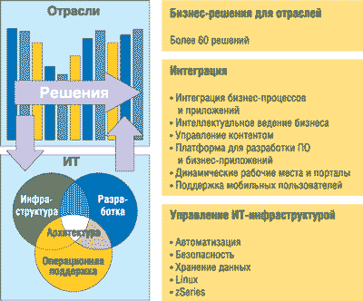

Говоря о развитии современных информационных технологий, можно выделить много характеристик и тенденций этого процесса в зависимости от конкретной обсуждаемой темы. В данном случае, рассматривая корпоративное применение ИТ, хотелось бы отметить два таких аспекта: во-первых, необходимость более глубокой интеграции ИТ с основным бизнесом заказчика и, во-вторых, повышение эффективности применения ИТ, снижение затрат на их внедрение и поддержку.
Вообще говоря, имея в виду именно эти задачи, ведущие ИТ-поставщики начали формулировать собственные концепции развития и продвижения технологических платформ - On Demand ("по требованию", IBM), Liquid Computing ("гибкие вычисления", BEA Systems), Adaptive Enterprise ("адаптивное предприятие", HP), Dynamic Systems ("динамические системы", Microsoft). Разумеется, каждая компания делает при этом акцент на собственное позиционирование на рынке и конкурентные преимущества. Однако при всем различии в формулировках стратегий и технологических аспектах их реализации во всех этих подходах всегда было много общего, и появившийся несколько лет назад термин SOA (service oriented architecture, сервис-ориентированная архитектура), по сути дела, отражает именно эту общность.
Подход IBM к внедрению новых методов ведения бизнеса
По мнению IBM, волна изменений, которые вызвали к жизни подход, названный корпорацией On Demand ("по требованию", рис. 1), продолжает нарастать. И хотя каждый клиент имеет свои особенности, существуют два стратегических требования, реализация которых позволяет компаниям добиваться успеха. Это внедрение инновационных методов ведения бизнеса с целью получения конкурентных преимуществ и дополнительной прибыли и оптимальное использование ресурсов с целью повышения эффективности.
|  |
| Рис. 1. Концепция IBM "бизнес по требованию".
|
Отвечая на эти требования, IBM выделяет три ключевых принципа, помогающих двигаться от теории бизнеса по требованию к реальной деятельности, которую можно назвать бизнесом по требованию. Первый из них состоит в том, что необходимость в гибкости и внедрении инноваций заставляет организации стать более "компонентными" - т. е. разбить весь бизнес на отдельные составляющие (или компоненты). Это позволяет организации подходить к бизнесу не с точки зрения его организационных, территориальных, продуктовых или клиентских составляющих, а начать рассматривать свою реальную работу через призму отдельных функций и процессов.
Далее, подобным же образом происходит развитие приложений: они становятся все более модульными. Таким образом, вместо того чтобы использовать большие по объему, монолитные приложения, содержащие миллионы строк программного кода, организации начинают задумываться о модульных функциональных программных компонентах, которые проще модифицировать в зависимости от потребностей меняющегося бизнеса.
И наконец, условия окружающей бизнес-среды требуют пересмотра и упрощения инфраструктуры компаний. Дело в том, что инфраструктура современных предприятий сложна и жестко организована, и часто методы ее реализации налагают на деятельность компании определенные ограничения, заставляющие ее идти на компромиссы при решении своих проблем; и это, конечно, следует изменить.
При этом нужно иметь в виду, что бизнес по требованию - это не решение и не методология по принципу "один размер на всех". Нужно понимать, что у организаций есть свои различные особенности и приоритеты, и это находит отражение в подходе IBM. При неограниченном разнообразии исходных точек первый шаг клиента зависит от приоритетов конкретной организации.
Реализуя свою стратегию бизнеса по требованию, IBM предлагает решения и услуги в трех основных областях (рис. 2): ИТ-инфраструктуры, разработки ПО и операционной поддержки. Ключевой момент в построении общей системы - оптимизация операционной среды, которая выполняется по двум основным направлениям.
|  |
| Рис. 2. Решения IBM для повышения эффективности ведения бизнеса и упрощения ИТ-инфраструктуры.
|
Первое - это повышение гибкости бизнеса через программные возможности, назначение которых - упростить интеграцию. Речь идет о возможности соединить людей, процессы и информацию, чтобы компании могли стать более гибкими и оперативно реагировать на динамику рынков, клиентов и конкурентов. Очевидно, это важно для внутренних процессов любого предприятия и будет становиться все более важным по мере того, как компании будут расширять свои сети формирования стоимости, обеспечивая более тесную интеграцию партнеров, поставщиков и клиентов и своих бизнес-процессов.
Второе - это упрощение ИТ-среды через создание инфраструктуры, облегчающей распределение ресурсов и управление благодаря автоматизации и - что очень важно - предоставляющей единый, консолидированный, согласованный взгляд на все доступные в сети ресурсы, а также обеспечивающей доступ к ним.
Свое ПО IBM создает, опираясь на принципы модульности (интегрированное, компонентное, наращиваемое, многоплатформенное, масштабируемое ПО) и поддержки открытых стандартов (свобода выбора, совместимость, защита инвестиций). При этом в спектре решений IBM можно выделить два основных типа:
- решения, ориентированные на особенности бизнеса, основанные на знании отдельных отраслей и понимании проблем, с которыми сталкиваются заказчики;
- решения, ориентированные на ИТ-среду и основывающиеся на знаниях вычислительной среды и понимании проблем, связанных со сложностью гетерогенной ИТ-инфраструктуры.
ИТ-инфраструктура - критически важная часть любого современного предприятия, и потому она должна отвечать требованиям гибкости, масштабируемости, надежности и эффективности. Создание и поддержание успешной ИТ-инфраструктуры бизнеса требует стратегического подхода, тщательного предвидения, своевременности финансовых вложений, а также планирования ресурсов.
По мере развития бизнеса компании вкладывают капитал в его инфраструктуру. Более сложные деловые модели и приложения могут предъявлять новые требования к инфраструктуре, приводя к дополнительным затратам на сетевые и аппаратные средства, ПО, персонал и процессы инфраструктуры. При успешном ведении бизнеса эти затраты должны окупиться за счет роста доходов. Цель многих компаний в этой ситуации состоит в том, чтобы определить "оптимальную инвестиционную кривую", которая соотносит инвестиции в инфраструктуру с развитием модели бизнеса (рис. 3).
 |
| Рис. 3. Влияние технологии на оптимальные инвестиции в ИТ-инфраструктуру.
|
Компании, не сумевшие правильно определить баланс между вложениями в ИТ-инфраструктуру бизнеса и требованиями самого бизнеса, тратят лишние средства, т. е. расходуют капиталы впустую, или же вкладывают недостаточный объем капитала и тем самым подвергают инфраструктуру риску отстать от запросов бизнеса.
На ранних фазах становления бизнеса компании логично основывать его инфраструктуру на наиболее рентабельных для бизнес-модели данной компании базовых технологиях ("технология A" на рис. 3). Однако по мере усложнения бизнес-модели предприятие должно делать значительные вложения в инфраструктуру, чтобы обеспечить требуемый уровень обслуживания заказчиков. В какой-то момент выбранная технология может резко снизить рентабельность (так как она начинает применяться для задач, для которых вовсе не предназначена), приводя или к существенному увеличению затрат на ИТ, или, что бывает чаще, к ухудшению уровня сервиса.
Если бы на ранних этапах становления бизнеса компания выбрала "технологию B" (хотя в тот момент это было дороже), она могла бы поддерживать развитие своей модели бизнеса гораздо дольше, не сталкиваясь с резким удорожанием инфраструктуры. Но поскольку новые технологии развиваются и деловые модели изменяются непрерывно, компаниям иногда приходится переключаться с одной базовой технологии на другую. Фактически этот процесс может повторяться несколько раз. Оптимальная инвестиционная кривая этого сценария связывает самые низкие точки каждой показанной технологии.
Компании должны стремиться к способности оценить эти кривые технологий, найти и не упустить точку перегиба. Если это делается успешно, они смогут поддерживать свою деловую модель с помощью оптимальной технологии и сменить ее, когда это становится экономически оправданным. Для этого следует придерживаться следующих подходов:
- использовать в разработке приложений открытые стандарты, такие, как HTML и XML, и межплатформенные технологии типа Java;
- выбирать компоненты инфраструктуры, которые могут работать на нескольких технологических платформах;
- использовать схему инфраструктуры, которая обладает гибкостью, масштабируемостью, надежностью и безопасностью.
ПО для построения ИТ-инфраструктуры
Корпорация IBM (http://www.ibm.com) предлагает широкий спектр программных решений и технологий для создания эффективной ИТ-инфраструктуры современных предприятий, которые представлены пятью группами ПО.
WebSphere - мощная платформа на базе J2EE для создания, развертывания и интеграции бизнес-систем. С ее помощью решаются следующие задачи:
- интеграция бизнес-процессов и информационных систем;
- создание инфраструктуры гарантированной доставки информации и данных;
- создание динамических Web-сайтов;
- построение порталов;
- разработка приложений электронного бизнеса.
DB 2 (Information management) - работа с данными и информацией: поиск, анализ, хранение и управление. В ее функции входит:
- поиск, анализ и представление данных из гетерогенных систем;
- создание корпоративных хранилищ данных;
- управление информационным наполнением.
Lotus - решения для повышения эффективности работы сотрудников в коллективе (Notes/Domino и Workplace), поддерживающие следующие возможности:
- электронная почта и совместная работа в Интернет;
- документооборот;
- расширенные возможности сотрудничества;
- электронное обучение и управление знаниями.
Tivoli - управление информационной инфраструктурой предприятия. Обеспечивает:
- автоматизацию управления;
- управление безопасностью;
- управление хранением данных;
- управление ИТ-услугами.
Rational - поддержка жизненного цикла проектов разработки программных систем. Ее функциональность включает:
- визуальное моделирование;
- технологии разработки, тестирования и сопровождения ПО;
- автоматизацию документирования;
- управление изменениями и конфигурационное управление.
Отдельно также нужно сказать о продуктах категории IBM Express (для WebSphere, DB2, Lotus и Tivoli), предназначенных для предприятий малого и среднего бизнеса. Они сочетают в себе разнообразный функционал, простую установку и привлекательные цены.
Более подробную информацию о программных технологиях IBM можно найти на корпоративном сайте http://www.ibm.com/ru/software. А здесь мы рассмотрим наиболее важные этапы развития софтверных продуктов, решений и услуг корпорации в 2005 г.
Новые услуги на базе SOA
Подразделение IBM Global Services объявило в апреле о начале представления новых услуг, которые помогут компаниям повысить отдачу от своих технических ресурсов, реализуя концепцию адаптации бизнеса по требованию с помощью SOA, интегрирующей данные как внутри компании, так и при ее взаимодействиях с заказчиками, партнерами и поставщиками.
В основе этого сервиса лежит подход Service Oriented Modeling and Architecture (SOMA), напрямую связывающий бизнес-процессы заказчиков с обеспечивающими их приложениями с помощью стандартизованных многократно используемых компонентов. Эти компоненты представляют собой сочетание программных модулей и методик, накопленных в процессе совместной работы с тысячами заказчиков из различных отраслей. Такая гибридная модель, сочетающая программные средства и сервисы, призвана сократить сроки внедрения ИТ-решений, снизить расходы заказчика и ускорить окупаемость инвестиций. Например, трудоемкие операции анализа и реструктуризации данных унаследованных приложений заменяются набором ресурсов, созданных в соответствии с особенностями конкретной отрасли и техническими стандартами и проверенных на практике заказчиками из этой отрасли.
Новые услуги IBM ориентированы на создание специализированных отраслевых решений, которые ускоряют развертывание новых технологий, в том числе с помощью методов моделирования бизнес-процессов, таких, как Component Business Modeling. Подобный подход избавляет сторонних разработчиков ПО и системных интеграторов от необходимости досконально учитывать особенности конкретной отрасли.
Комплект предложений IBM Global Services включает следующие четыре услуги.
IBM Business Enablement Services for Service-Oriented Architecture - определяет, каким образом архитектура SOA может помочь достичь бизнес-целей конкретного заказчика, повысить гибкость ИТ-ресурсов, устранить противоречия между бизнесом и ИТ, а также избежать дорогостоящих ошибочных шагов, гарантируя соответствие реализованных технологий будущим потребностям.
IBM Design Services for Service-Oriented Architecture - помогает заказчикам создавать архитектурный проект и конкретный план реализации SOA. Услуга выявляет преимущества и трудности реализации SOA и предоставляет заказчику проекты и спецификации для целевых областей, определенных в рамках услуги IBM Business Enablement Services for Service-Oriented Architecture.
IBM Implementation Services for Service-Oriented Architecture - в рамках этой услуги происходит практическая реализация концепций и планов заказчика в соответствии с концепцией SOA.
IBM Management Services for Service-Oriented Architecture - предполагает текущий мониторинг, обслуживание и проверку ИТ-инфраструктуры на соответствие предъявляемым требованиям. Тем самым обеспечивается упреждающее управление SOA по критерию максимальной пользы для бизнеса.
Эти четыре сервиса интегрируются с набором специализированных и серийных корпоративных приложений заказчика в рамках комплексной услуги IBM Application Value Optimization Services, которая представляет собой всеобъемлющее интегрированное решение, позволяющее непрерывно оценивать, трансформировать и контролировать всю совокупность используемого клиентом ПО.
Движение к автономным вычислениям
Повышение эффективности применения информационных систем сегодня все чаще связывается с технологическим направлением, получившим название "Автономные вычисления" (Autonomic computing, AC). Под этим понимается модель самоуправляемых вычислений, поддерживающая оптимальное функционирование приложений без явного вмешательства со стороны пользователей или администраторов, примерно так же, как нервная система человека управляет его телом на бессознательном уровне. Необходимость такого подхода связана в первую очередь с ростом сложности вычислительных систем и всеобъемлющим характером их применения (pervasive computing). В этих условиях традиционные методы управления и настройки вручную уже не годятся, так как решения нужно принимать оперативно и с учетом множества различных факторов (т. е. быстро решать достаточно сложные математические задачи).
В настоящее время многие лидеры ИТ-отрасли, включая IBM, HP, Sun и Microsoft, занимаются исследованиями в этой области, внедряя отдельные АС-компоненты в свои решения. Наверное, наиболее активно в данном направлении продвигается корпорация IBM, которая в числе прочего предпринимает усилия по созданию открытых стандартов для автономных вычислений (http://www-03.ibm.com/autonomic). Современный этап работ в этом направлении начался в 1999 г. проектом eLiza, который два года спустя был представлен широкой публике под названием IBM Autonomic Computing Initiative. В 2002 г. в корпорации было сформировано отдельное подразделение IBM Autonomic Computing Group.
Говоря о сфере применения автономных вычислений, IBM выделяет четыре основных направления: самоконфигурирование, самовосстановление, самооптимизацию и самозащиту. Для решения этих задач модель AC должна включать восемь критических ее элементов:
- использование всеобъемлющей специализированной базы данных обо всех компонентах системы;
- возможность самоконфигурирования с учетом множества условий, в том числе малопредсказуемых;
- постоянное отслеживание своего состояния с целью поиска оптимальных режимов функционирования;
- решение задач самовосстановления, поиск альтернативных путей выполнения заданных функций при возникновении проблем;
- автоматическое выявление угроз и защита от них;
- возможность адаптации к условиям внешней среды;
- применение открытых стандартов, а не закрытых технологий (основанных на принципах частной собственности, proprietary);
- прозрачность работы системы управления для пользователя и способность прогнозировать изменения его требований.
Важный практический шаг к реализации идей автономных вычислений IBM сделала, выпустив в сентябре 2004 г. СУБД DB2 Universal Database 8.2, в которой впервые предложила новые технологии самоуправления и самонастройки баз данных, содержащих критически важную бизнес-информацию. А весной 2005 г. корпорация представила две новые AC-технологии для разработки автономных систем и продуктов и управления ими - Policy Management for Autonomic Computing (PMAC) и Touchpoint Simulator.
PMAC - результат полуторагодового проекта, реализованного лабораторией разработки IBM. Он представляет собой инструмент автономного управления на основе политик и бизнес-правил, встраиваемый в приложения. Например, он может сообщать базе данных о необходимости резервного копирования на основе данных о заданных сроках, уровне ее загрузки и многих других параметров. Средство Touchpoint Simulator соединяет между собой различные вычислительные ресурсы (серверы, базы данных) на этапе разработки и отладки специализированных AC-приложений. Оба эти инструмента доступны для загрузки на Web-сайте IBM для разработчиков ПО - http://www.alphaworks/ibm.com.
По данным компании Singlestep Technologies, которая смогла поработать с представленными средствами по программе раннего ознакомления, применение этих технологий позволяет снизить затраты на управление ИТ-системами на 20-40%, освобождая ИТ-персонал для выполнения других проектов. За последние четыре года IBM включила почти 500 AC-функций в более чем 70 своих продуктов, свыше 60 ее бизнес-партнеров используют ключевые механизмы AC-технологий IBM в своих решениях.
ПО для защиты конфиденциальной информации
Весной IBM представила и новое программное решение DB2 Anonymous Resolution, предназначенное для улучшения безопасности информационного обмена между организациями путем защиты персональных идентификационных данных, которые хранятся в соответствующих репозиториях.
Появление этого продукта в арсенале IBM стало следствием приобретения в январе компании SRD, на основе которой было тогда же создано подразделение IBM Entity Analytic Solutions. Технологии SRD, которые теперь называются Entity Analytics, позволяют заказчикам формировать точные и актуальные единые представления данных, сводя воедино информацию из разнородных оперативных баз данных предприятия. При этом обеспечивается высокое качество бизнес-информации, в том числе сведений об отдельных людях (DB2 Identity Resolution) и о наличии взаимосвязей в наборах данных (DB2 Relationship Resolution).
Новое ПО, используя технологию Entity Resolution, анализирует данные и выявляет принадлежность информации ("кто есть кто") во множестве разнородных наборов данных. Это решение способно выявить совпадение идентификационных данных без обращения к первичным персональным идентификаторам (SSN, национальное удостоверение личности и т. д.) и даже при наличии неизбежных неточностей в анализируемых сведениях (плохое качество данных, разночтения в именах, различные адреса, а также намеренные искажения, типичные для случаев мошенничества). ПО также способно выявлять неочевидные связи между отдельными идентификационными записями, например, общие телефонные номера, адреса или банковские счета. Это позволяет обнаруживать взаимосвязи и распознавать записи по принципу "кто знает кого".
DB2 Anonymous Resolution дополняет возможности ранее выпущенных продуктов DB2 Identity Resolution ("кто есть кто") и DB2 Relationship Resolution ("кто знает кого") средствами анонимного сравнения записей и обнаружения прямых совпадений или связей между отдельными индивидуумами, обеспечивая при этом более высокий уровень защищенности с точки зрения как личной конфиденциальности, так и безопасности используемой информации.
Решения для управления ИТ-услугами
В дополнение к трем традиционным направлениям Tivoli - управление системами, управление безопасностью и управление хранением данных, - IBM сейчас быстро наращивает усилия по формированию семейства программных продуктов для управления ИТ-услугами - IBM Tivoli IT Service Management (Tivoli ITSM).
В мае 2005 г. корпорация объявила о выпуске нового набора для автоматизации и интеграции ИТ-процессов (от установки обновлений безопасности до управления изменениями в ИТ-инфраструктуре) для корпоративных ИТ-систем, в том числе имеющих распределенную структуру. Данная разработка появилась в результате обобщения опыта и сотрудничества двух основных подразделений компании - IBM Software и IBM Global Services. Данные средства должны помочь заказчикам перейти от традиционной "затратной" схемы организации ИТ-подразделений к бизнес-ориентированной процессной модели. Представленный сейчас набор включает следующие решения.
IBM Tivoli Unified Process - навигационный инструмент, предлагающий метод "как сделать" для настройки и внедрения лучших практик на базе методологии ITIL для проектирования, модификации и улучшения ИТ-процессов. С помощью этого средства заказчики могут оценить, каковы правильные шаги к построению эффективной ИТ-службы и какие программные и аппаратные средства для этого понадобятся.
IBM Tivoli Change and Configuration Management Database (CCMDB) - виртуальная база данных, которая собирает данные об ИТ-инфраструктуре из различных хранилищ. Это позволит сформировать обзор реального положения дел на десятках серверов корпоративной системы.
IBM Tivoli Process Managers - программный пакет для автоматизации ИТ-процессов с использованием различных технологий: софтверных, аппаратных, сетевых и хранения. В набор входят три решения, отвечающих за управление релизами, управление готовностью и управление жизненным циклом ИТ-компонентов. Их можно настроить для применения в вертикальных сегментах, например, медицине или торговле.
Специализированные услуги от IBM Global Services на базе новых ITSM-решений. Гибридная программно-сервисная модель IBM ускоряет процессы разработки и развертывания ПО и сервисов для решения бизнес-проблем заказчика.
В дополнение к новым продуктам IBM намерена расширять возможности существующих продуктов Tivoli в направлении поддержки ITSM. В частности, новые версии IBM Tivoli Provisioning Manager и IBM Tivoli Configuration Manager уже сейчас обеспечивают автоматизацию управления изменениями и управления проблемами применительно к ИТ-инфраструктуре.
Новый продукт для развертывания ПО
Летом IBM объявила о начале поставок новой версии программного продукта WebSphere Extended Deployment (WED) 6.0, обеспечивающего эффективное использование существующей ИТ-инфраструктуры, в том числе поддержку смешанных рабочих нагрузок и серверов разных типов. Это решение имеет усовершенствованный механизм кэширования данных и повышает качество управления и мониторинга в вычислительной среде. По сравнению с вариантом 5.1 в данном выпуске переработана такая функциональность, как динамическое выполнение операций, поддержка высокопроизводительных вычислений, расширенные возможности управления; кроме того, реализована новая функциональность для обеспечения гибкости бизнеса.
Особый акцент в WED 6.0 сделан на высокую управляемость системы, что позволило предоставить заказчику простые средства администрирования, ориентированные на производственную операционную среду. Кроме того, WED 6.0 упрощает управление Java-ресурсами, надежно защищая доступ к этим ресурсам и сервисам. В нем используется разделение приложений для выполнения целевых транзакций, а новая функция ObjectGrid обеспечивает кэширование распределенных данных для ускорения выполнения транзакций.
WED расширяет возможности WebSphere Application Server, реализуя концепцию Business Grid. Это позволяет создать динамичную, управляемую в соответствии с бизнес-потребностями, высокопроизводительную среду на базе связующего ПО WebSphere, обеспечивающую выполнение как онлайновых, так и долговременных приложений. Этот продукт обладает возможностями самоуправления и автономной работы. Управление развертыванием многочисленных версий приложений возможно без нарушения процессов предоставления услуг.
Lotus Notes и Domino 7
Реализуя объявленные в январе 2005 г. планы, IBM выпустила в сентябре новую версию своей платформы поддержки коллективной работы - Lotus Notes и Domino 7 (включая решения Lotus Sametime, Lotus QuickPlace, Lotus Domino Designer, Lotus Domino Web Access, Lotus Domino Express и другие предложения). Данное событие стало весьма важным для многочисленной армии пользователей этого популярного ПО, число которых в мире составляет около 120 млн. Дело в том, что в условиях реорганизации софтверного бизнеса "Голубого гиганта" и унификации различных продуктовых линеек в среде ИТ-общественности возникли серьезные сомнения в перспективах развития продуктов Lotus в силу неопределенности их позиционирования в новой концепции IBM Workplace.
Понимая эти настроения заказчиков и партнеров, IBM в начале года совершенно определенно объявила о предстоящем выпуске решений IBM Lotus 7.0, уточнив при этом, что в долгосрочной перспективе они будут развиваться в рамках единой платформы IBM Workplace. Немного позднее корпорация пояснила, что речь идет не о замене Lotus на технологию WebSphere, а о самостоятельном присутствии на рынке, но в увязке с новой торговой маркой, объединяющей целый ряд новых продуктов.
В объявлении о выпуске версии Lotus Notes и Domino 7 подчеркивается, что эти продукты представляют собой ключевые компоненты платформы IBM Workplace, и отмечается, что их обновление (каждые 12-18 месяцев) выполняется по анонсированным заранее планам, что позволяет клиентам гарантированно развивать свою ИТ-инфраструктуру, минимизируя усилия по миграции. В результате более 90% заказчиков Lotus используют самую современную версию этой системы - беспрецедентный для отрасли ПО пример лояльности клиентов.
В версии Lotus Notes 7 пользователи найдут более 120 новых возможностей, позволяющих эффективно работать и справляться с растущими объемами информации. Отдельно нужно отметить, что технология мгновенного обмена сообщениями и индикации присутствия, уже встроенная в клиент Lotus Notes, теперь распространена на всю платформу, включая электронную почту и календари.
Помимо расширения функциональности для пользователей, в Lotus Domino 7 включены также новые инструменты для разработчиков приложений. Судя по откликам заказчиков IBM, более 65% из них создают в этом году столько же приложений на основе Lotus Domino, как и год назад, или даже больше - и это число, по прогнозам, будет расти, учитывая усовершенствованные возможности разработки в версии Lotus Domino 7. Новое средство проектирования Web-сервисов позволяет разработчикам использовать Lotus Domino как центр Web-сервисов. Кроме того, Lotus Notes и Domino 7 также дают разработчикам возможность использовать в качестве основы своих новых и прежних приложений как традиционные функции хранения данных NSF, так и IBM DB2. Благодаря этому они могут пользоваться открытым языком SQL и выбирать технологию, которая лучше отвечает их навыкам и потребностям бизнеса.
Существенно улучшены инструменты ИТ-администрирования. Исходя из результатов внутреннего тестирования, IBM прогнозирует, что новая версия позволит многим заказчикам увеличить число обслуживаемых пользователей (в расчете на один сервер) на 50%, требуя на 25% меньше ресурсов центрального процессора при прежней рабочей нагрузке. Кроме того, новые автономные средства мониторинга и внедрение технологии Tivoli Analyzer позволяют сэкономить средства, автоматически предупреждая администраторов о потенциальных проблемах с производительностью до того, как они проявятся, тем самым помогая исключить сбои и простои серверов и максимально эффективно использовать ИТ-ресурсы.
Версия Lotus Domino 7 выпускается для платформ Microsoft Windows 2000, Windows Server 2003; IBM iSeries, zSeries (z/OS и Linux), AIX 5.2 или 5.3; Sun Solaris и Linux (x86) - SUSE Linux Enterprise Server 8 или 9, Red Hat Enterprise Linux 4 и Sun Solaris 10. Lotus Notes 7 выпускается для Windows 2000 и XP. Поддержку Mac OS планируется реализовать в будущем выпуске Lotus Notes.
Еще один набор предложений для SOA
В сентябре IBM объявила о выпуске новых программных продуктов и услуг, предназначенных для поддержки компаний, внедряющих и использующих системы на основе SOA. Судя по всему, это самый большой анонс корпорации в данной сфере за последние пять лет, с тех пор как появилась сама концепция SOA. Как известно, в рамках SOA бизнес-процессы рассматриваются как совокупность связанных между собой сервисов, реализованных на основе открытых стандартов. Поддержка этой архитектуры со стороны IBM выполняется в виде сформулированной ранее инициативы SOA Foundation. Новые программные продукты принадлежат к семейству IBM WebSphere, а дополнением к ним служат усовершенствованные средства Rational и Tivoli. Они составляют набор инструментария для моделирования, сборки, развертывания и управления SOA, в который входят следующие компоненты.
WebSphere Business Modeler - удобный инструмент, который позволяет специалистам по бизнесу и ИТ моделировать и проектировать структуру процессов до развертывания и дополняет возможности моделирования SOA, предусмотренные в ПО Rational Software Architect.
WebSphere Integration Developer - средство разработки приложений на базе Eclipse помогает строить и внедрять бизнес-процессы, основанные на SOA. Оно позволяет разрабатывать композитные приложения, рассматривая существующие ИТ-ресурсы как сервисы, которые легко связывать между собой в законченные бизнес-процессы.
WebSphere Enterprise Service Bus (ESB) - решение для развертывания SOA-систем, обеспечивающее подключение и интеграцию ориентированных на Web-сервисы приложений и услуг. Для расширения функциональности ESB корпорация IBM представила также новую версию WebSphere Message Broker, ПО для универсального подключения и преобразования данных приложений вне зависимости от их соответствия тем или иным стандартам.
WebSphere Process Server построен на базе WebSphere ESB для выполнения специализированных задач развертывания ПО, в том числе для интеграции бизнес-процессов, охватывающих персонал, системы, заказчиков и бизнес-партнеров.
WebSphere Business Monitor - ПО для управления SOA. Новая версия этого продукта позволяет контролировать ход бизнес-процессов и ключевые показатели производительности.
Кроме того, IBM выпустила новую версию своего ведущего средства разработки Rational Application Developer, в котором усилена поддержка SOA. А в ноябре корпорация представила новое ПО Tivoli Composite Application Manager (IBM Tivoli CAM) для управления композитными приложениями - прикладными компонентами, которые можно по мере необходимости группировать и многократно использовать на предприятии, а также модернизированный вариант Tivoli Monitoring 6.1.
В дополнение к программным инструментам подразделение IBM Global Services предлагает в поддержку инициативы SOA Foundation три новые группы профессиональных услуг, которые помогут руководителям компаний и ИТ-департаментов выработать согласованную SOA-концепцию предприятия и последовательно внедрять ее.
В продвижении идей SOA корпорация IBM опирается на свою партнерскую сеть. Новая инициатива в этой сфере получила название IBM SOA Business Partner Community и будет реализоваться через сеть IBM PartnerWorld Industry Network и задействовать ресурсы виртуальных центров инноваций IBM. Компания объявила о новых возможностях и ресурсах для участников сообщества, включая доступ к инструментарию SOA Business Value Toolkit, позволяющему оценить практическую выгоду от SOA-проекта исходя из отраслевых моделей; персонализированное планирование подготовки к внедрению и техническую поддержку через портал знаний и технической поддержки IBM Virtual Innovation Center; доступ к шаблонам рекламных материалов по SOA, скидкам и поощрительным программам IBM.
Появились также новые ресурсы для разработчиков на портале developerWorks. Там планируется начать новую серию Podcast-трансляций, которая поможет разработчикам оставаться в курсе новейших технологических тенденций. Там же находится ряд образовательных материалов - учебные пособия, технические статьи и обзоры, которые помогают быстрее приобрести необходимые навыки создания решения для SOA.
Rational на мэйнфреймах
В октябре на рынке появилась новая версия популярного продукта IBM Rational Performance Tester, которая позволяет в среде z/OS тестировать в режиме моделирования производительность Web-приложений, предназначенных для работы на различных платформах - Windows, Unix и мэйнфреймах. Используя мощные вычислительные ресурсы мэйнфреймов типа IBM zSeries, с помощью этого инструмента можно эмулировать действия тысяч одновременно работающих пользователей. Все это может делаться в тестовых лабораториях, до развертывания создаваемого ПО на физических реальных системах. IBM Rational Performance Tester for z/OS работает совместно с ранее выпущенным ПО IBM Rational Functional Tester for Terminal Based Applications (функциональное тестирование терминальных приложений), расширяя выбор инструментов углубленного тестирования производительности и функциональности для приложений на базе мэйнфреймов.
Решения для системного управления
Осенью начались также поставки IBM Director 5.10 - новой версии инструмента управления сложной ИТ-средой. Помимо серверов xSeries, в этом продукте расширена поддержка ОС Linux на IBM zSeries и pSeries, а также на недавно выпущенных системах IBM System z9. Кроме того, Director 5.10 используется как стандартный компонент управления аппаратными средствами в составе решения IBM Virtualization Engine. Он также поддерживает гетерогенные среды и дополняет другие средства управления, в том числе IBM Tivoli, HP OpenView, CA UniCenter, Microsoft SMS и Microsoft Operations Manager.
В выпуске Director 5.10 реализованы также следующие новые возможности:
- оптимизированные агенты для упрощения развертывания;
- модернизированный инструмент Virtual Machine Manager, используемый в качестве точки интеграции ПО VMware или MS Virtual Server и физических серверов, на которых развернуты эти виртуальные машины;
- функция проверки состояния ПО, упрощающая управление обновлениями;
- новые инструменты разработки - в сочетании с основанными на стандартах конструктивными принципами IBM Director, - позволяющие бизнес-партнерам по средствам управления расширять возможности этого продукта и предоставлять заказчикам еще более обширный и гибкий набор возможностей.
Впереди - трансформация бизнес-процессов
В сентябре корпорация IBM опубликовала сообщение, из которого можно сделать вывод о серьезности ее намерений заняться новым направлением - предоставлением услуг трансформации бизнес-процессов (Business Process Transformation Services, BPTS).
Здесь нужно вспомнить, что деятельность IBM сосредоточена в трех основных группах - Global Services, Hardware и Software. Доля сервисного подразделения неизменно возрастает, и по итогам последнего финансового года на него пришлась почти половина доходов компании (46,5 млрд долл.). Традиционной сферой деятельности IBM Global Services остается предоставление ИТ-услуг, однако после приобретения в 2002 г. одного из мировых лидеров бизнес-консалтинга, компании PricewaterhouseCoopers, быстро растет и доля службы Global Consulting Services. Судя по всему, говоря о BPTS, корпорация имеет в виду формирование новой сферы услуг на стыке ИТ и традиционного бизнес-консалтинга.
Прогресс ИТ привел к тому, что они стали играть более активную роль в возможностях развития основного бизнеса заказчиков и напрямую влиять на возможности используемых бизнес-моделей. При этом реорганизация деятельности компаний идет в направлении применения свободно конфигурируемых и динамичных производственных систем, поддержанных такой же динамичной ИТ-инфраструктурой - это и есть то, что IBM называет переходом на принципы бизнеса "по требованию".
Автоматизация бизнеса размыла традиционные границы между бизнесом и ИТ, поставив ИТ в центр корпоративной стратегии и обеспечив новый уровень понимания возможностей бизнеса. В результате заказчики все чаще ищут партнеров, способных умело сочетать понимание сути бизнеса с технологическим опытом.
Рынок BPTS охватывает множество отраслевых и тематических сегментов, которые различаются по экономическим особенностям и возможностям получения прибыли. IBM вычленила для себя потенциальную область освоения объемом примерно в 500 млрд долл., включающую ограниченное число сегментов, имея в виду следующие основные направления:
- консультирование по стратегиям и изменениям (Strategy & Change);
- инженерные и технологические услуги (E&TS);
- аутсорсинг трансформации бизнеса (BTO);
- ПО для обновления и оптимизации бизнеса (BIO).
Отметим, что за последние три года IBM сделала несколько важных приобретений, способствующих развитию направления BPTS. Имеются в виду компании, обладающие опытом консалтинга и предлагающие необходимое ПО, а именно:
- PwC Consulting - общий фундамент в области консалтинга и бизнес-услуг;
- KeyMRO - услуги закупки и стратегический выбор поставщиков;
- Equitant - управление на основе активов и оптимизация цикла заказ-оплата;
- Maersk Data - транспортные и логистические услуги;
- SRD - ПО для анализа личной идентификационной информации;
- Alphablox - ПО для интеллектуального бизнес-анализа;
- Liberty Insurance - контроль исполнения страховых контрактов, управление рисками, обслуживание клиентов и анализ данных;
- Daksh - индийская компания, специализирующаяся на аутсорсинге бизнес-процессов;
- Healthlink - ИТ-сервисы для здравоохранения.
По мере развития рынка корпорация планирует реализовать новые BPTS-предложения для освоения новых направлений. Так, в июне она анонсировала новую услугу BTO по управлению цепочками поставок.